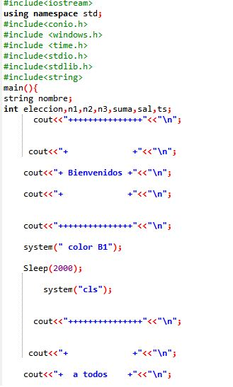
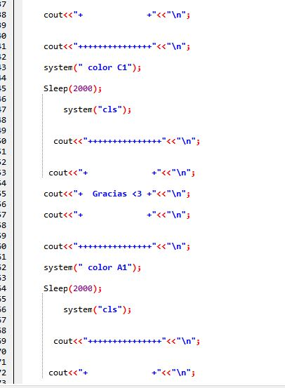
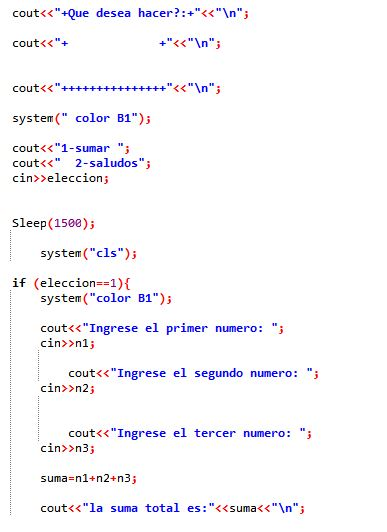
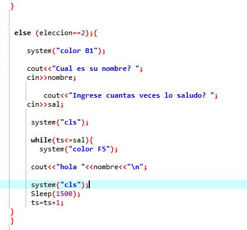

Examen final
   
El examen final me parecio algo muy interesante y entretenido, pero para lograr el resultado tuve que realizarlo varias veces ya que tenia algunos errores logìcos, pero al final si pude lograrlo hacer ;)